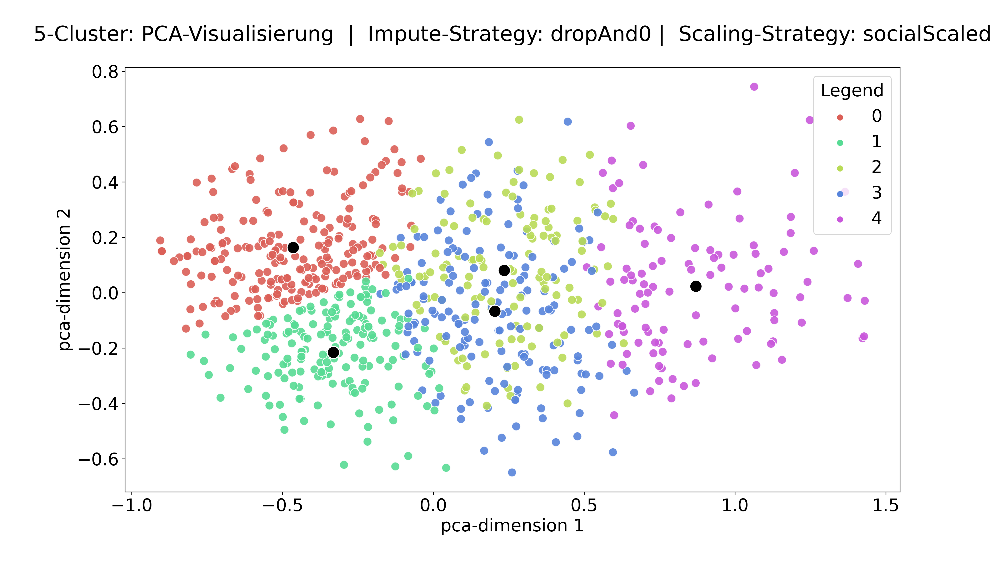

Ergänzendes Material GDCP JT 2022 (JZ)
Hallo zusammen, danke für Ihr Interesse! Ich bin Jannis Zeller von der RWTH Aachen und habe hier ergänzendes Material zu meinen Beitrag zur GDCP Jahrestagung 2022 in Aachen hochgeladen.
- Interaktiver Radar-Plot der Cluster-Zentren. Klicken Sie herum, man kann einiges genauer anschauen!
-
Häufigkeitsverteilung der Cluster. Die Cluster sind dabei mit aufsteigendem mittlerem Gesamtscore der zugeordneten Proband:innen nummeriert.

- Zweidimensionale Visualisierung der Cluster. Genutzt wurde eine "Principal Component Analysis". Die erste dimension des reduzierten Parameterraumes hängt sehr stark mit dem Gesamtscore zusammen. Man muss hier nicht "besorgt" sein, dass Cluster 2 und 3 nicht gut differenzierbar sind, dies liegt an der Reduzierung der Dimensionalität zu Visualisierungszwecken. 
-
Ausgewählte "Kontroll"variablen. Die Folgende Tabelle zeigt, dass die Clusterbelegung erwartungskonform zu den Variablen "Fachsemester in Physik" und "Gesamtpunktzahl" ist:
Fachsemester in Physik Gesamtpunktzahl Cluster mean median std mean median std 0 2.64 1.0 6.79 8.14 8.0 2.60 1 3.33 3.0 2.67 11.56 11.0 2.51 2 5.26 3.0 3.77 17.28 17.0 2.95 3 5.18 5.0 3.46 17.76 17.0 3.14 4 7.07 7.0 3.92 24.94 25.0 3.46 -
Zusammenhang zwischen Clustern und Item-Response-Niveaus. Aus dem Datensatz lässt sich mithilfe einer theoretischen Modellierung der Komplexität der Testitems ein Niveaumodell mit 3 Stufen ableiten. Dies lässt sich durch die folgende Wright Map visualisieren:

- Zusammenhang zwischen einer Modellierung mit 3 Clustern und Item-Response-Niveaus. Der interaktive Plot zeigt den Zusammenhang zwischen einer Clusteranalyse mit 3 Clustern und einer Item-Response-Niveauanalyse mit 3 Niveaus. Die großen Überschneidungen können als ein Validitätsargument für die Cluster-Analyse im Allgemeinen aus einer Testtheoretischen Perspektive aufgefasst werden.